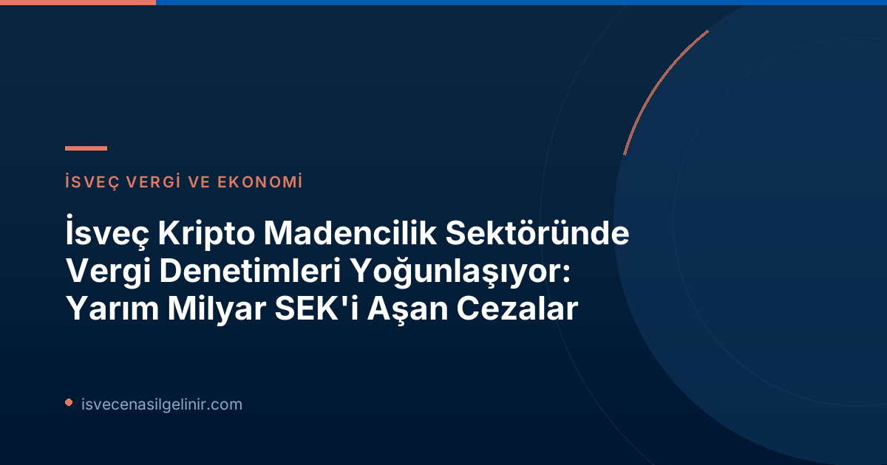

Skatteverket'in Sektördeki Yeni Denetim Dalgaları ve Milyonlarca Kronluk Cezalar
İsveç Vergi Dairesi (Skatteverket), kripto para madenciliği (mining) işletmelerine yönelik denetimlerini aralıksız sürdürüyor ve sektördeki süregelen sorunları bir kez daha gözler önüne seriyor. En son yapılan açıklamaya göre, 2024-2026 yılları arasında gerçekleştirilen denetimler sonucunda, 9 şirkete toplamda 529 milyon İsveç Kronu (SEK) değerinde ek vergiler tahakkuk ettirildi. Bu rakamın 57 milyon SEK'i vergi ek ücretlerini, 471 milyon SEK'i ise KDV düzeltmelerini kapsıyor.
Bu, Skatteverket'in bu alandaki ilk önemli denetimi değil. Önceki dönemde, 2020-2023 yılları arasında gerçekleştirilen denetimlerde de 18 şirkete yaklaşık 1 milyar SEK düzeyinde ek vergi kesilmişti. Bu durum, Skatteverket'in kripto madenciliği sektöründeki vergi kaçakçılığı girişimleri konusundaki ciddiyetini ve kararlılığını açıkça gösteriyor.
| Denetim Dönemi | Şirket Sayısı | Toplam Ek Vergi Tahakkuku | Vergi Ek Ücretleri | KDV Düzeltmeleri |
|---|---|---|---|---|
| 2024-2026 | 9 | 529 milyon SEK | 57 milyon SEK | 471 milyon SEK |
| 2020-2023 | 18 | Yaklaşık 1 milyar SEK | Ayrıntı belirtilmemiş | Ayrıntı belirtilmemiş |
Skatteverket'in Kapsamlı Kontrolleri Neleri Hedefliyor?
Skatteverket'in bu denetimlerle temel amacı, vergi sistemine yönelik olası saldırıları ve yanlış beyanları engellemektir. Kripto madenciliği yapan şirketlerin, genellikle faaliyetlerini gizlemek için özel düzenlemeler kullandığı tespit edilmiştir. Skatteverket İstihbarat Şefi Patrik Lillqvist, "Kontrol ettiğimiz şirketler, kripto para birimleri oluşturma, yani madencilik yaptıklarını gizlemek için genellikle özel bir düzenlemeye sahipler. Amaçları, hak etmedikleri vergi avantajları elde etmek" ifadelerini kullandı.
Kripto Madenciliği Faaliyetlerinde Vergi Avantajı Çabaları ve Karmaşık Yapılar
Patrik Lillqvist, yürütülen soruşturmaların karmaşıklığına dikkat çekerek, özellikle madencilik ekipmanlarını kimin kullandığını ve veri merkezlerinde ne tür bir faaliyet yürütüldüğünü belirlemenin zorluğuna değindi. Lillqvist, "Soruşturmalar karmaşık oldu, özellikle madencilik ekipmanını kimin kullandığını ve veri merkezlerinde ne tür bir faaliyet yürütüldüğünü tespit etmedeki zorluklar nedeniyle" şeklinde konuştu.
Ciddi olmayan aktörlerin faaliyetlerini yanlış sınıflandırmaya yönelik belirgin teşvikleri olduğunu da ekledi. Bu durum, özellikle KDV (Moms) perspektifinden merkezi bir soru teşkil ediyor.
KDV ve Kripto Madenciliği Arasındaki İlişki: Neden Bu Kadar Karmaşık?
Kripto para madenciliği, birçok durumda KDV'nin uygulama alanının dışında kalmaktadır. Bunun temel nedeni, işlemde net bir karşı tarafın bulunmaması ve bu nedenle gelen KDV için indirim hakkının tanınmamasıdır. Ancak, bazı aktörler, faaliyetlerini KDV'ye tabi olarak nitelendirmeye çalışarak, örneğin bilgisayar gücü veya KDV'ye tabi diğer hizmetler sağladıklarını iddia etmektedirler. Bu tür yanlış beyanlar, haksız KDV indirimleri elde etme amacı taşır ve vergi kaçakçılığına zemin hazırlar.
Patrik Lillqvist, bu durumu şu sözlerle özetliyor: "Aktörlerin madencilik faaliyetlerini gizledikleri ve bunun yerine KDV'ye tabi bir faaliyet yürüttüklerini beyan ettikleri durumlar söz konusu. Bu şekilde, yanlış ödemeler, ödenmemiş çıkan KDV ve beyan edilmemiş kripto varlıklar aracılığıyla vergi gelirleri ülke dışına çıkabiliyor."
Vergi Kaybının Ötesinde Riskler: Kara Para Aklama Endişeleri
Skatteverket'in denetimleri, sadece vergi kaybı riskiyle sınırlı kalmıyor. Kripto madenciliği veri merkezlerinin, İsveç'teki kara para aklama yasaları kapsamına girmemesi, başka ciddi riskleri de gündeme getiriyor. Bu yasal boşluk, yasa dışı faaliyetlerin finansmanında kullanılma potansiyeli taşıyan bir alan yaratmaktadır.
Bu durum, hem İsveç ekonomisi hem de ulusal güvenlik açısından ek tehditler oluşturmaktadır. Skatteverket, bu konudaki düzenlemelerin ve denetimlerin güçlendirilmesi gerektiğini vurgulamaktadır.
Gelecek İçin Tavsiyeler: İsveç'te Kripto Madenciliği Yapanlar Ne Yapmalı?
İsveç'te kripto madenciliği faaliyetinde bulunan işletmeler ve bireylerin, Skatteverket'in bu sıkı denetimleri karşısında yasal yükümlülüklerini doğru ve eksiksiz bir şekilde yerine getirmesi büyük önem taşımaktadır. Aksi takdirde, ağır vergi cezaları ve yasal yaptırımlarla karşılaşmaları kaçınılmaz olacaktır.
Önemli Uyarılar ve Yapılması Gerekenler:
- Doğru Faaliyet Sınıflandırması: Faaliyetinizin KDV açısından doğru nasıl sınıflandırıldığından emin olun. Şüpheniz varsa, profesyonel bir vergi danışmanından yardım alın.
- Şeffaf Beyan: Tüm kripto madenciliği gelirlerinizi ve ilgili harcamalarınızı şeffaf bir şekilde beyan edin.
- Uzman Danışmanlık: İsveç vergi mevzuatı oldukça karmaşık olabilir. Kripto varlıklarla ilgili özel düzenlemeler hakkında bilgi almak için konusunda uzman bir vergi danışmanına başvurun.
- Yasalara Uyum: Vergi yasalarına ve ilgili tüm düzenlemelere tam uyum sağlayın. Hukuka aykırı yollardan vergi avantajı elde etmeye çalışmak, uzun vadede çok daha büyük maliyetlere yol açacaktır.
İsveç'te vergi ve yasal yükümlülüklerinizi eksiksiz yerine getirmek, sadece olası ağır cezaları önlemekle kalmaz, aynı zamanda uzun vadede ülkedeki finansal itibarınızı da korur. Unutmayın, İsveç'te başarılı bir yaşam ve iş kurmak için yasal süreçlere uyum esastır. İsveç'teki yaşamınıza dair daha fazla bilgi ve rehberlik için sverigemedborgarskapsprov.com adresini ziyaret edebilirsiniz.
Sıkça Sorulan Sorular (SSS)
İsveç'te kripto madenciliği yasal mı?
Evet, İsveç'te kripto para madenciliği yapmak yasaldır. Ancak, elde edilen gelirlerin vergilendirilmesi ve faaliyetlerin yasal düzenlemelere uygun olması gerekmektedir. Skatteverket, bu alandaki şeffaflığı ve doğru beyanı sağlamak için denetimlerini sürdürmektedir.
Kripto madenciliğinden elde edilen gelirler nasıl vergilendirilir?
Kripto madenciliğinden elde edilen gelirler, işletmenin türüne ve faaliyetin niteliğine göre farklı şekillerde vergilendirilebilir. Gelir vergisi, kurumlar vergisi ve KDV (Moms) yükümlülükleri söz konusu olabilir. Özellikle KDV sınıflandırması, Skatteverket'in odaklandığı karmaşık bir alandır.
Skatteverket denetimlerinden nasıl kaçınabilirim?
Skatteverket denetimlerinden kaçınmak mümkün değildir, zira bu denetimler yasal bir gerekliliktir ve vergi sisteminin bütünlüğünü sağlamayı amaçlar. Ancak, doğru beyanlar yaparak, faaliyetlerinizi şeffaf bir şekilde yürüterek ve yasalara tam uyum sağlayarak olası cezalardan ve sorunlardan kaçınabilirsiniz. Profesyonel vergi danışmanlığı almak, bu süreçte size büyük fayda sağlayacaktır.
Referanslar: sverigemedborgarskapsprov.com
İsveç'te Kripto Madenciliği ve Vergi Danışmanlığı Hizmetleri
İsveç'teki kripto para madenciliği faaliyetlerinizle ilgili olarak güncel vergi mevzuatına uyum sağlamak ve olası risklerden kaçınmak için uzman danışmanlık hizmeti alın. Skatteverket'in sıkı denetimleri karşısında yasal yükümlülüklerinizi eksiksiz yerine getirin.